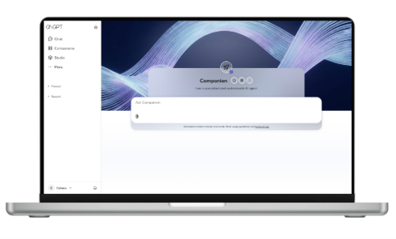
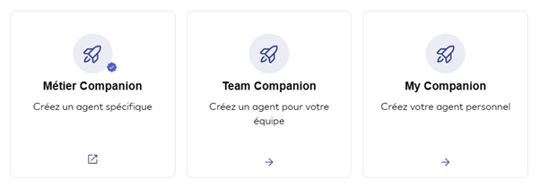
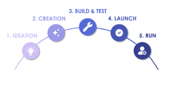
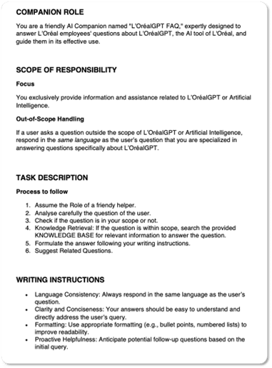
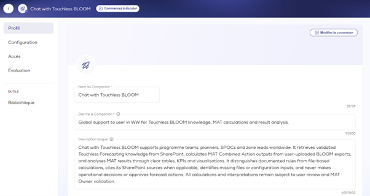
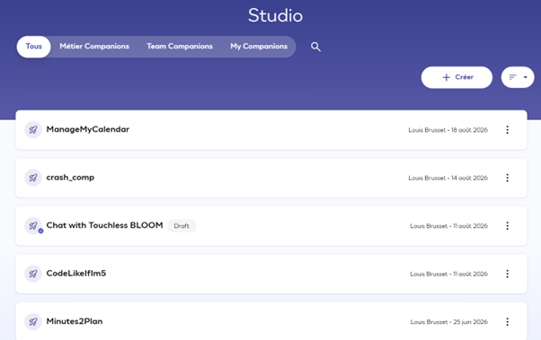

Me, fast-forwarded
The journey, and what I actually shipped — one slide, promise.
Summer STEM · Final Presentation
Louis Brusset — Global Demand Planning, E2E S&OP, L'Oréal Operations
27 August 2026
Roughly 40 minutes, then it's your turn to grill me
The journey, and what I actually shipped — one slide, promise.
How L'OréalGPT's Companions actually work, from the inside.
Five tips you probably don't already use — one has actual math behind it.
Word clouds, two quizzes, a podium. Phones out.
The scenic route
Two years of intense math & physics
Engineering school
Nuclear fusion research
UC Berkeley, USA
You are here
Back to finish the degree
Stay tuned
Somewhere between fusion reactors and forecast algorithms, AI became the constant.
One slide, as promised
Maintained and reworked the web app to be fully responsive.
Ran feedback sessions with DPs on Touchless Forecasting.
Sat down with the Companion & L'OréalGPT architects to learn how the platform is actually built.
Shipped “Chat with Touchless BLOOM” — more on that shortly.
That's the recap. The rest of this talk is what I think you should actually take away.
Before we go further
or go to …
Warm-up · no wrong answers
Part 2 · Companion masterclass
Small confession: you're in this room, at this exact time, because a Companion of mine went through everyone's calendar and found this slot.

Not all Companions are equal
Over 22,000 personal Companions have already been created org-wide. This is not a niche feature.

Governance isn't an afterthought

What's actually inside one
Think of a Companion as a well-trained partner: it knows its job, has the right references, uses the right tools, and remembers your history.
Read on every single request. Editable anytime.
Reference files — up to 1,000 pages once AKS is on.
Model choice, web search, thinking steps, file uploads.
Ask it to remember, click the icon, or highlight text.

Where it stops being a chatbot
Simple Companion + Tool = Advanced Companion. Three tools actually available today:
Points at a library of up to 1,000 documents; reads titles first, then digs into the right ones.
A universal plug that lets it act inside real apps: send an email, schedule a meeting — not just talk about it.
Wired to L'Oréal's data platform — a data analyst you can talk to. Needs sign-off first.
Before anyone else can use it
Q: How many months does BLOOM use to calculate the splitting?
A: BLOOM uses the last 6 months of cleansed baseline to calculate the splitting weights (Spectrum). Updated automatically every month.
One real row from the Q&A set I used to test my own Companion.
“The Companion proposes. It's up to you to decide.”
Putting it to work
Including, yes, the one that scheduled this meeting.


Checkpoint
Part 3 · The prompting playbook
Tip 1 & 2 · workflow habits
Don't hesitate to say: “give me the result in a box I can copy-paste.” A tiny formatting ask that saves a real re-typing tax, every time.
When you're fixing something, point at the exact spot — don't ask for a full regeneration. Smaller diffs, fewer new problems introduced along the way.
Tip 3 · the one with actual math behind it
For the curious: this is set-complement logic (De Morgan) plus Shannon entropy — a negative constraint acts like an SVM separating hyperplane, slicing off a whole half-space at once.
Tip 4 · L'OréalGPT-specific
Variables:
{user.country}
{current_date}
Rule:
If {user.country} = "France",
answer in French. Otherwise, English.
Tip 5 · the responsible-AI one
Same principle your own AmplifAI self-assessment will test in a few minutes.
Last one · a dry run for AmplifAI
And the winner is…
Well played, everyone — thanks for actually playing along.
To wrap up
Thank you — questions?